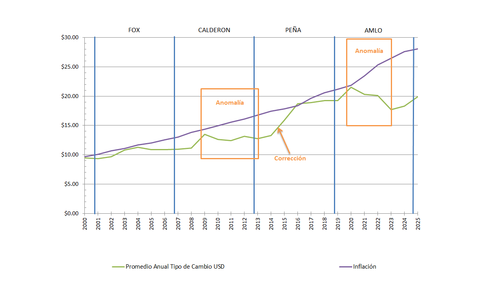

1. Deuda
| Fecha | Presidente | Saldo Millones de pesos % del PIB | ¿Quién endeudó más al país (MXP)? % del Total de la deuda | Crisis Internacionales |
|---|---|---|---|---|
| Dic 2000 | Antecesores de Fox | $2'051,001 [1] ND % del PIB | $2.05 Billones 11.61% | |
| Dic 2006 | Fox | $3'135,438 [1] ND % del PIB | $1.08 Billones 6.14% | Crisis de las Punto Com (2001) Los USA estuvieron 8 meses en recesión económica |
| Dic 2012 | Calderón | $5'890,846 [1] 35.80% [2] | $2.76 Billones 15.60% | Gran Recesión (2008) Los USA estuvieron 19 meses en recesión económica |
| 30 nov 2018 | Peña | $10'550,416 [3] 44.80% [4] | $4.66 Billones 26.38% | |
| 30 sep 2024 | AMLO | $16'732,790 [5] 49.30% [5] | $6.18 Billones 35.01% | Pandemia Covid-19 (2020) Los USA estuvieron 3 meses en recesión económica |
| 31 Mar 2025 | Sheinbaum
(En 6 meses de gobierno) | $17'661,957 [6] 49.20% [6] | $0.93 Billones 5.26% |
{kind=link}
[1]Estadísticas Oportunas de Finanzas Públicas
[2]Informes sobre la Situación Económica, las Finanzas Públicas y la Deuda Pública. Acciones y Resultados al Cuarto Trimestre de 2012
[3]Información de Finanzas Públicas y Deuda Pública, ENERO-NOVIEMBRE DE 2018
[4]Información de Finanzas Públicas y Deuda Pública, ENERO-DICIEMBRE DE 2018
[5]Información de Finanzas Públicas y Deuda Pública, ENERO-SEPTIEMBRE DE 2024
[6]Información de Finanzas Públicas y Deuda Pública, ENERO-MARZO DE 2025
2. Inflación
| PRESIDENTE | PERIODO | INFLACION ACUMULADA EN SEXENIO[1] | CRISIS INTERNACIONALES |
|---|---|---|---|
| Fox | Dic 2000 - Nov 2006 | 29.03% | Crisis de las Punto Com (2001) Los USA estuvieron 8 meses en recesión económica |
| Calderón | Dic 2006 - Nov 2012 | 28.22% | Gran Recesión (2008) Los USA estuvieron 19 meses en recesión económica |
| Peña | Dic 2012 - Nov 2018 | 26.98% | |
| AMLO | Dic 2018 - Sep 2024 | 32.09% | Pandemia Covid-19 (2020) Los USA estuvieron 3 meses en recesión económica |
| Sheinbaum (En 7 meses de gobierno) |
Oct 2024 - Abr 2025 | 2.04% |
[1]Con base a los INPC publicados por BANXICO
3. Déficits
| PRESIDENTE | AÑOS BASE DEL CÁLCULO[2] | DÉFICIT ANUAL PROMEDIO | CRISIS INTERNACIONALES |
|---|---|---|---|
| Fox | 2001 [1], 2002, 2003, 2004, 2005, 2006 | 2.21% | Crisis de las Punto Com (2001) Los USA estuvieron 8 meses en recesión económica |
| Calderón | 2007, 2008, 2009, 2010, 2011, 2012 | 2.67% | Gran Recesión (2008) Los USA estuvieron 19 meses en recesión económica |
| Peña | 2013, 2014, 2015, 2016, 2017, 2018 | 2.90% | |
| AMLO | 2019, 2020, 2021, 2022, 2023, 2024 | 4.07% | Pandemia Covid-19 (2020) Los USA estuvieron 3 meses en recesión económica |
[1]Informe Anual 2001 Banco de Mexico
[2]Comunicados de Prensa SHCP
4. PIB
| PERIODO | Ultimo mes año inicio - Ultimo mes año terminación[1] | CRECIMIENTO PIB[2] | CRISIS INTERNACIONALES |
|---|---|---|---|
| Fox | Dic 2000 - Dic 2006 | 11.38% | Crisis de las Punto Com (2001) Los USA estuvieron 8 meses en recesión económica |
| Calderón | Dic 2006 - Dic 2012) | 8.57% | Gran Recesión (2008) Los USA estuvieron 19 meses en recesión económica |
| Peña | Dic 2012 - Dic 2018 | 12.25% | |
| AMLO | Dic 2018 - Dic 2024 | 5.22% | Pandemia Covid-19 (2020) Los USA estuvieron 3 meses en recesión económica |
[1]El PIB se reporta por años completos.
[2]Cálculo realizado con base en cifras del "Sistema de Cuentas Nacionales de México. Producto Interno Bruto Trimestral. Año Base 2018" emitido por el INEGI. Metodología: (PIB Anual del último año del sexenio) entre (PIB Anual del último año del sexenio anterior) = Resultado - 1
| AÑO | PRECIOS ACTUALES[1] | PROMEDIO ANUAL TIPO DE CAMBIO USD[2] | PURCHASING POWER PARITY[3] |
|---|---|---|---|
| 2000 | 9 | $9.46 | 11 |
| 2001 | 8 | $9.34 | 11 |
| 2002 | 8 | $9.67 | 11 |
| 2003 | 10 | $10.79 | 11 |
| 2004 | 11 | $11.29 | 11 |
| 2005 | 11 | $10.89 | 11 |
| 2006 | 13 | $10.90 | 11 |
| 2007 | 14 | $10.93 | 11 |
| 2008 | 13 | $11.14 | 11 |
| 2009 | 15 | $13.50 | 11 |
| 2010 | 15 | $12.63 | 11 |
| 2011 | 15 | $12.43 | 11 |
| 2012 | 15 | $13.17 | 11 |
| 2013 | 15 | $12.77 | 12 |
| 2014 | 15 | $13.30 | 12 |
| 2015 | 14 | $15.88 | 12 |
| 2016 | 15 | $18.69 | 12 |
| 2017 | 15 | $18.91 | 12 |
| 2018 | 15 | $19.24 | 12 |
| 2019 | 15 | $19.26 | 12 |
| 2020 | 15 | $21.50 | 13 |
| 2021 | 15 | $20.28 | 13 |
| 2022 | 14 | $20.12 | 13 |
| 2023 | 13 | $17.73 | 13 |
| 2024 | 13 | $18.33 | 13 |
| 2025 | 15 | $20.28 | 13 |
[1]https://www.imf.org/external/datamapper/NGDPD@WEO/OEMDC/ADVEC/WEOWORLD
[2]BANXICO
[3]https://www.imf.org/external/datamapper/PPPGDP@WEO/OEMDC/ADVEC/WEOWORLD
Anomalía Inflación vs Tipo de Cambio USD.
Al graficar los datos de la tabla anterior se puede notar que a partir del año 2021 se desacopló la tendencia de la Inflación (Línea Morada) y la tendencia del Tipo de Cambio del USD (Línea Verde). Esperemos que eso no traiga problemas en un futuro como ocurrió en el período de 2009 a 2013 que terminó con una fuerte corrección del Tipo de Cambio de casi del 50%.
DATO CURIOSO: También se puede apreciar una aparente mejora en el Ranking Mundial del PIB de 2022 a 2023 (Línea Roja), pero fue más producto del comportamiento anómalo del Tipo de Cambio del USD y se puede corroborar en la tabla anterior Ranking Mundial PIB México según el FMI con el ranking calculado por Paridad del Poder de Compra (Purchasing Power Parity) donde nunca se reportó mejora alguna durante ese periodo.
5. Inversión Extranjera Directa (IED)
| PERIODO | PORCENTAJE PROMEDIO[1] | CRISIS INTERNACIONALES |
|---|---|---|
| Fox | 2.27% | Crisis de las Punto Com (2001) Los USA estuvieron 8 meses en recesión económica |
| Calderón | 1.17% | Gran Recesión (2008) Los USA estuvieron 19 meses en recesión económica |
| Peña | 1.90% | |
| AMLO (2019 - 2023)[2] | 2.30% | Pandemia Covid-19 (2020) Los USA estuvieron 3 meses en recesión económica |
[1]Banco Mundial
[2]No han sido publicados los datos del 2024.
6. Pobreza
| Presidente | Posición último año sexenio anterior (52=Mejor, 76=Peor) | Posición último año sexenio (52=Mejor, 81=Peor) | Posiciones (+)Ganadas (-)Perdidas | Crisis Internacionales |
|---|---|---|---|---|
| Fox | 54 [2] | 52 [3] Posición de 2005 porque en 2006 no se elaboró el Ranking | +2 | Crisis de las Punto Com (2001) Los USA estuvieron 8 meses en recesión económica |
| Calderón | 52 [3] Posición de 2005 porque en 2006 no se elaboró el Ranking | 61 [4] | -9 | Gran Recesión (2008) Los USA estuvieron 19 meses en recesión económica |
| Peña | 61 [4] | 76 [5] | -15 | |
| AMLO | 76 [5] | 81 [6] Posición del Ranking 2023, todavía no emiten el Ranking 2024 | -5 | Pandemia Covid-19 (2020) Los USA estuvieron 3 meses en recesión económica |
[1]El Indice de Desarrollo Humano (HDI) mide: Expectativa de vida al nacer, Expectativa de escolaridad, Media de escolaridad e Ingreso Nacional Bruto per Cápita.
[2]HDR 2002
[3]HDR 2007/8
[4]HDR 2013
[5]HDR 2019
[6]HDR 2025
| Categorías | Calderón 2006 vs 2012 | Peña 2012[4] vs 2018[5] | AMLO 2018[5] vs 2022[5] |
|---|---|---|---|
| Población en Pobreza Multidimensional con ingresos inferiores a $4,158.35 en zonas urbanas o $2,970.76 en zonas rurales [1]; y con 1 o más Carencias Sociales[2] Promedio Carencias Sociales | No Compatible[3] | -3.60% -1'400,000 -0.1 | -5.60% -5'100,000 +0.3 |
| Población con ingresos superiores a $4,158.35 en zonas urbanas o $2,970.76 en zonas rurales [1], pero con 1 o más Carencias Sociales[2] Promedio de Carencias Sociales | No Compatible[3] | -2.20% -800,000 0.0 | +3.00% +5'200,000 +0.2 |
| Población con ingresos inferiores a $4,158.35 en zonas urbanas o $2,970.76 en zonas rurales [1], pero Sin Carencias Sociales | No Compatible[3] | +1.80% +2'700,000 | -0.80% -600,000 |
| Población con ingresos superiores a $4,158.35 en zonas urbanas o $2,970.76 en zonas rurales [1]; y Sin Carencias Sociales | No Compatible[3] | +3.90% +6'100,000 | +3.40% +5'600,000 |
| Total Población | 100% 108'600,000 | +9.98% +11'700,000 | +4.12% +5'100,000 |
[1]Cantidades actualizadas hasta 2022.
[2]Carencias Sociales:
- Rezago Educativo
- Acceso a Servicios de Salud
- Acceso a Seguridad Social: que incluye afiliación a sistemas de pensión o seguros sociales
- Calidad y Espacios de la Vivienda: que incluye materiales (piso de tierra, paredes de cartón) y hacinamiento (>2.5 personas por habitación)
- Acceso a Servicios Básicos en la Vivienda
- Acceso a Alimentación Nutritiva y de Calidad
[3]Los datos reportados por el CONEVAL de 2006 no se pueden adecuar a la metodología empleada en 2012.
[4]CONEVAL
[5]Fuente: Tabla "Porcentaje, número de personas y carencias promedio por indicador de pobreza" del "Comunicado No 7: El CONEVAL presenta las estimaciones de pobreza multidimensional 2022."
Pobreza Extrema
Los datos del periodo 2018-2022 indican una disminución de 5.1 millones de personas en pobreza multidimensional, no obstante, la población que permaneció en esta condición (46.8 millones) vio un incremento en su promedio de carencias sociales (de 2.3 a 2.6)[1].
Un cambio particularmente notable se observa en la carencia de acceso a los servicios de salud, que aumentó de 20.1 millones de personas (16.2%) en 2018 a 50.4 millones (39.1%) en 2022[1].
Al analizar el desglose que hace el CONEVAL a la población que se encuentra en Pobreza Multidimensional, en población con Pobreza Extrema y población con Pobreza Moderada, podemos observar que durante el periodo de 2018 a 2022 la población más pobre entre los pobres fue la que se hizo aún más pobre al aumentar el promedio de sus Carencias Sociales y aumentar en cantidad de población como lo muestra la siguiente tabla:
| Categorías | 2018 | 2022 | (-)Disminución (+)Aumento |
|---|---|---|---|
| Población Extrema Pobreza: Ingresos inferiores a $2,086.21 en zonas urbanas o $1,600.18 en zonas rurales[2] y con 3 o más Carencias Sociales[3] Promedio Carencias Sociales | 7.00% 8'700,000 3.6 | 7.10% 9'100,000 3.8 | +0.10% +400,000 +0.2 |
| Población Pobreza Moderada: Ingresos entre $2,086.21 y $4,158.35 en zonas urbanas o ingresos entre $1,600.18 y $2,970.76 en zonas rurales[2] con 1 o más Carencias Sociales[3] Promedio Carencias Sociales | 34.90% 43'200,000 2.0 | 29.30% 37'700,000 2.3 | -5.60% -5'500,000 +0.3 |
| Total Población con ingresos inferiores a $4,158.35 en zonas urbanas o $2,970.76 en zonas rurales[2] y con 1 o más Carencias Sociales[3] Promedio Carencias Sociales | 41.90% 51'900,000 2.3 | 36.40% 46'800,000 2.6 | -5.50% -5'100,000 +0.3 |
[1]Fuente: Tabla "Porcentaje, número de personas y carencias promedio por indicador de pobreza" del "Comunicado No 7: El CONEVAL presenta las estimaciones de pobreza multidimensional 2022."
[2]Cantidades actualizadas a Agosto de 2022.
[3]Carencias Sociales:
- Rezago Educativo
- Acceso a Servicios de Salud
- Acceso a Seguridad Social: que incluye afiliación a sistemas de pensión o seguros sociales
- Calidad y Espacios de la Vivienda: que incluye materiales (piso de tierra, paredes de cartón) y hacinamiento (>2.5 personas por habitación)
- Acceso a Servicios Básicos en la Vivienda
- Acceso a Alimentación Nutritiva y de Calidad
7. Empleo
| Fecha | Presidente | Salario Mínimo Gral, MXP x día | Aumento en el Sexenio vs Sexenio Anterior | Salario Mínimo Zona Libre Frontera Nte, MXP x día | Aumento en el Sexenio vs Sexenio Anterior | (+)Aumento (-)Disminución Puestos de Trabajo Afiliados IMSS[3] |
|---|---|---|---|---|---|---|
| 30-Nov-2006 | Fox | $47.05 | 33.96% | N/E | N/E | +12.41% |
| 30-Nov-2012 | Calderón | $60.50 | 33.74% | N/E | N/E | +19.13% |
| 30-Nov-2018 | Peña | $88.36 | 46.05% | $88.36 | N/E | +27.37 |
| 30-Sep-2024 | AMLO | $248.93 | 181.72% | $374.89 | 324.28% | +11.96% |
| 30-Abr-2025 | Sheinbaum (En 7 meses de gobierno) | $278.80 | 12.00% | $419.88 | 12% | -0.28% |
[1]BANXICO
[2]STPS
[3]Cálculo: (Ultimo mes del sexenio) entre (Ultimo mes del sexenio anterior) = Resultado menos 1
8. Energéticos
| PRESIDENTE | ÚLTIMO MES DE SEXENIO | BARRILES PETROLEO DIARIOS PROMEDIO (no se incluyen condensados)[1] | BARRILES DE CONDENSADOS DIARIOS PROMEDIO (los condensados no son petróleo)[1] | TOTAL BARRILES HIDROCARBUROS LIQUIDOS[1] |
|---|---|---|---|---|
| Salinas | Nov 1994 | 2'672,540 | 0 | 2'672,540 |
| Zedillo | Nov 2000 | 2'964,550 | 0 | 2'964,550 |
| Fox | Nov 2006 | 3'163,044 | 0 | 3'163,044 |
| Calderón | Nov 2012 | 2'576,806 | 0 | 2'576,806 |
| Peña | Nov 2018 | 1'697,483 | 19,427 | 1'716,911 |
| AMLO | Sep 2024 | 1'478,943 | 270,054 | 1'748,998 |
| Sheinbaum (En 6 meses de gobierno) |
Mar 2025 | 1'344,436 | 262,729 | 1'607,165 |
[1]Producción de hidrocarburos líquidos por región y activo (BDI PEMEX)
| PERIODO | DOS BOCAS[1] | VENTAS INTERNAS GASOLINAS[2] |
|---|---|---|
| Ago 2024 | 10,597 | 687,834 |
| Sep 2024 | 1,549 | 658,802 |
| Oct 2024 | 9,804 | 658,911 |
| Nov 2024 | 1,582 | 668,488 |
| Dic 2024 | 13,044 | 667,837 |
| Ene 2025 | 13,412 | 610,434 |
| Feb 2025 | 7,246 | 631,932 |
| Mar 2025 | 3,958 | 650,825 |
| PROMEDIO | 7,649 | 654,383 |
[1]Elaboración de productos petrolíferos por refinería (BDI PEMEX)
[2]Volumen de las Ventas Internas de Productos Petrolíferos y Gas Licuado (BDI PEMEX)
Consultas, quejas, aclaraciones: eramirezr@ymail.com